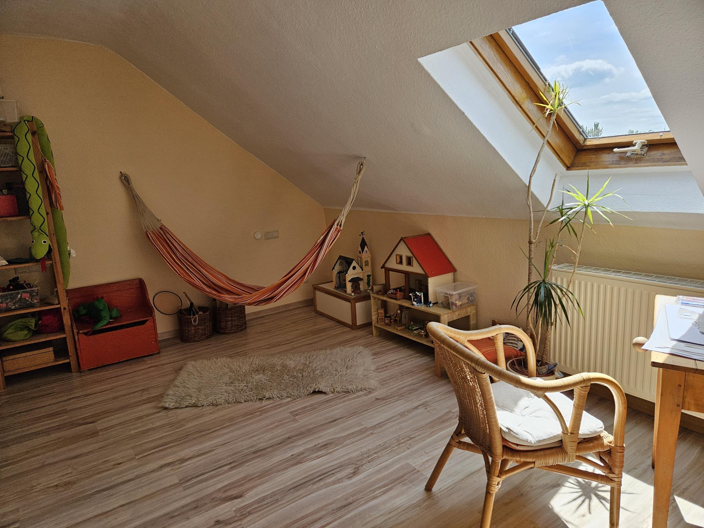
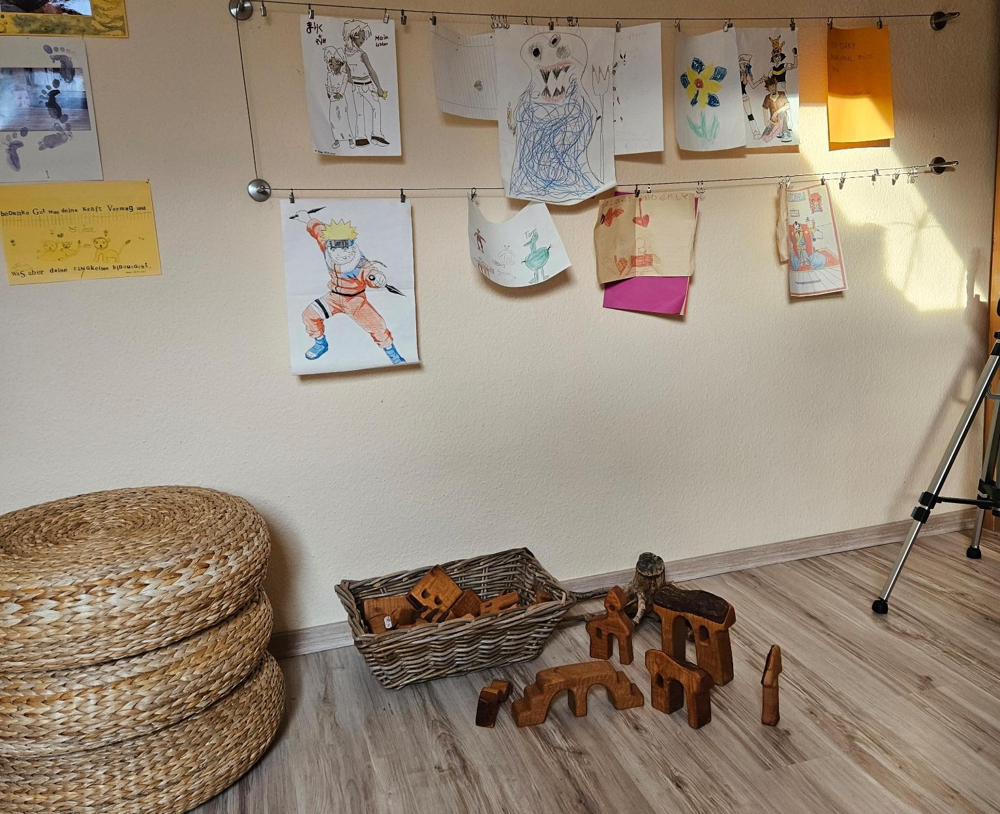
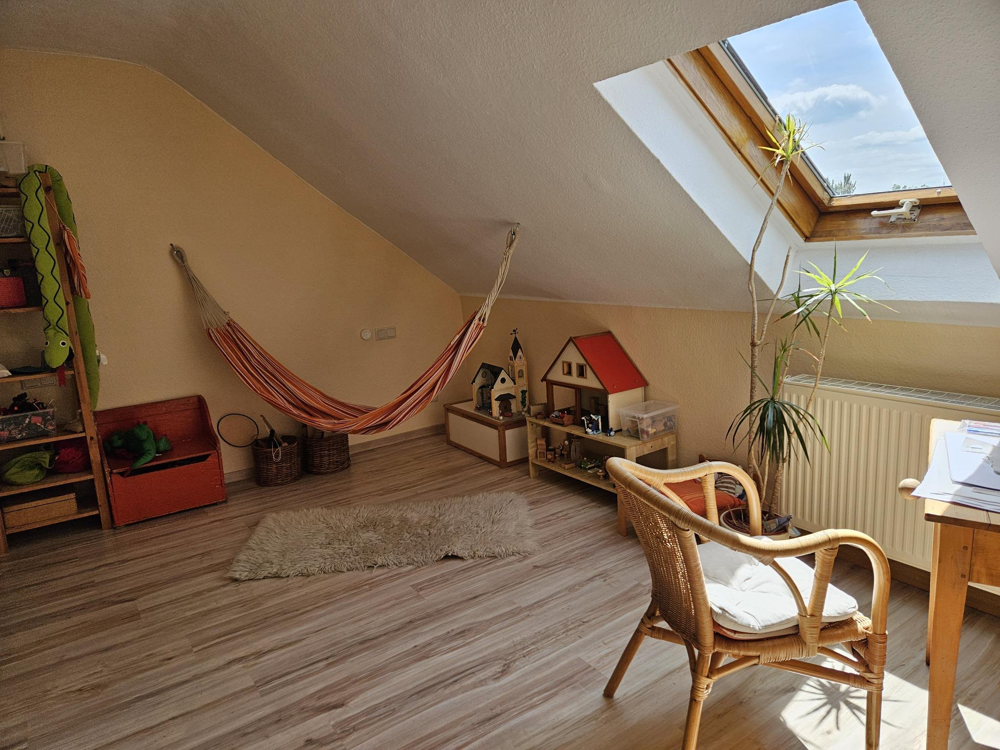
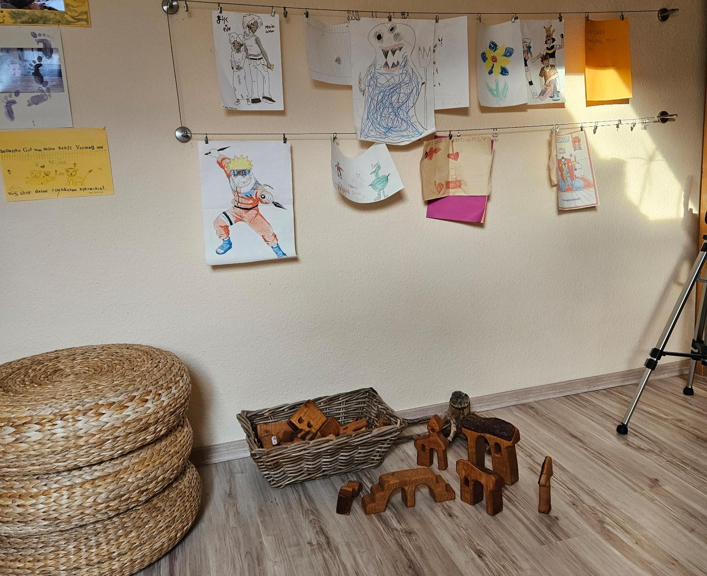
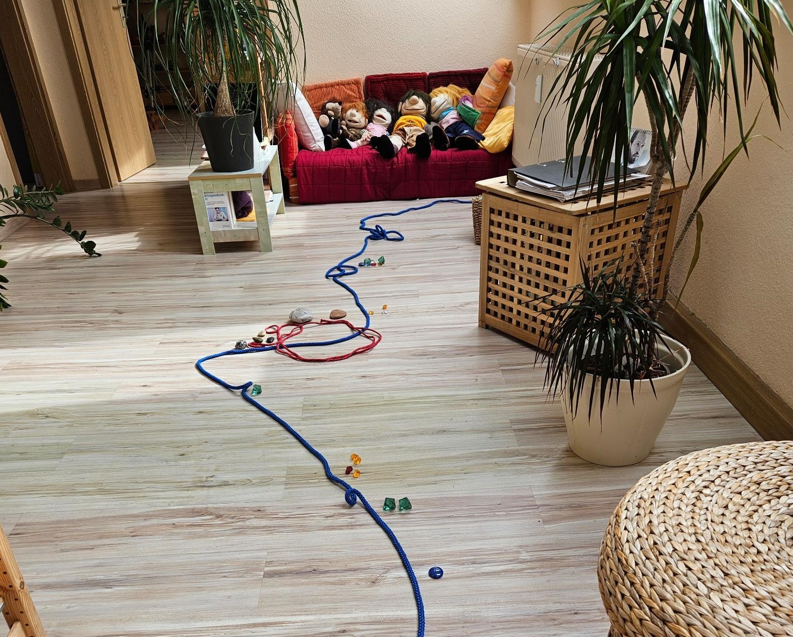
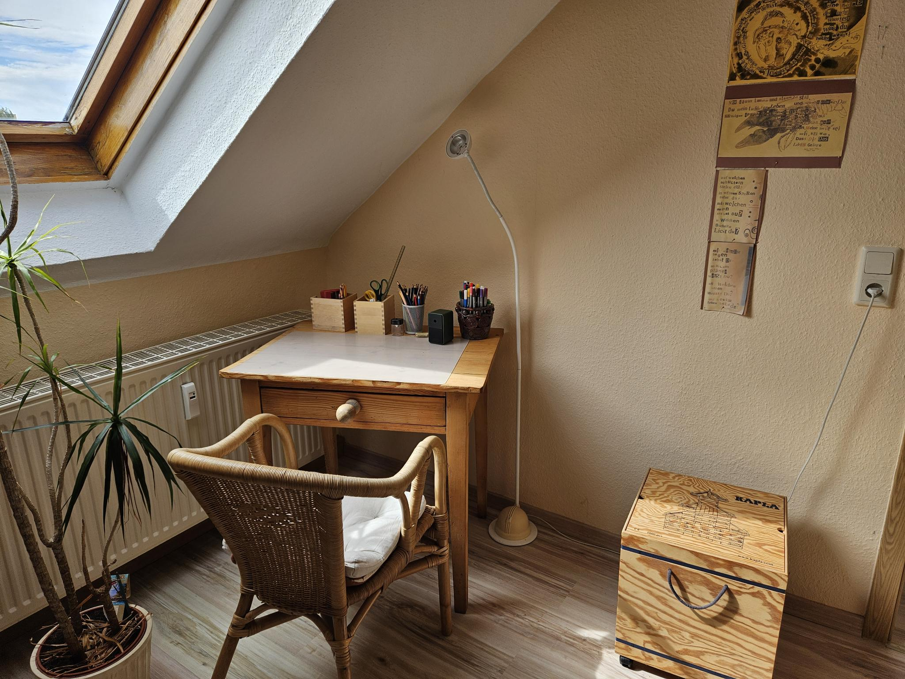
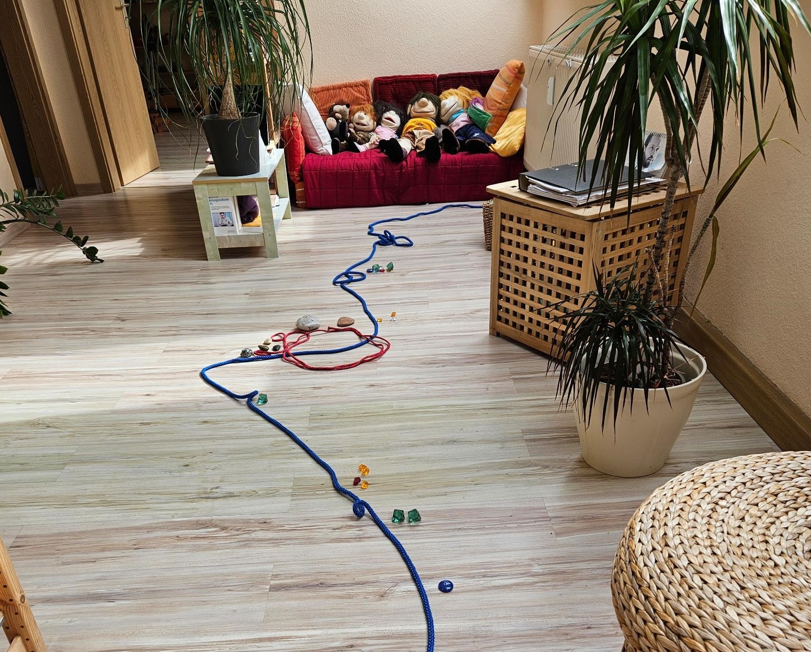
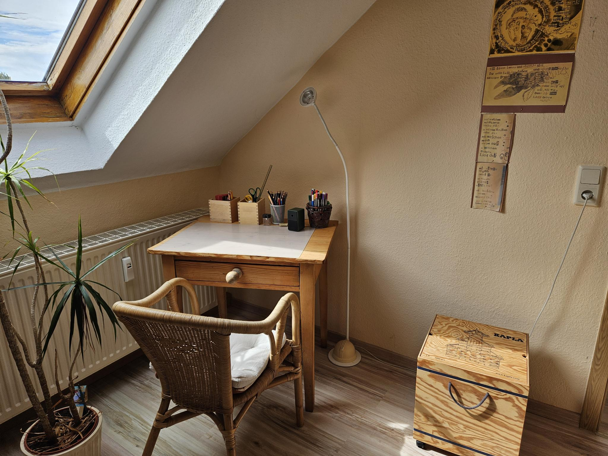

Psychodynamische Einzeltherapie
Konventionelle, auf die jeweiligen Fähigkeiten und Bedürfnisse von Kindern und Jugendlichen angepasste psychodynamische Einzeltherapie im Einzelsetting und dazugehörige Begleitpersonenstunden.
Praxis Gabriele Steinhäuser – Kinder- und Jugendlichenpsychotherapeutin
Herzlich willkommen auf der Internetseite meiner Praxis für Psychotherapie. Auf diesen Seiten erhalten Sie einen Überblick über mein therapeutisches Angebot und die Behandlungsschwerpunkte. Zudem erfahren Sie Wissenswertes über meine Qualifikationen und meinen beruflichen Hintergrund. Wenn Sie Interesse an einem persönlichen Gespräch haben, finden Sie hier auch alle notwendigen Informationen zur Kontaktaufnahme.
Kinder- und Jugendlichenpsychotherapeutin (tiefenpsychologisch fundiert)
Systemische Therapeutin (SG)
Therapeutin für Psychotraumatologie und traumazentrierte Psychotherapie (ZPTN)
Als tiefenpsychologisch fundiert arbeitende Therapeutin sehe ich seelische Schwierigkeiten als Ausdruck ungelöster innerer oder zwischenmenschlicher Konflikte, die ihre Wurzeln in der Vergangenheit oder in der Gegenwart haben können. Als systemische Therapeutin gehe ich davon aus, dass im Symptom kreative Lösungsansätze verborgen sein können und jeder Mensch über innere Stärke, Fähigkeiten und Begabungen verfügt (und weiterentwickeln kann), um mit solchen Belastungen umzugehen.
In der traumazentrierten Psychotherapie verknüpfe ich beide Ansätze und ergänze sie durch spezielle Verfahren.
 



 



Konventionelle, auf die jeweiligen Fähigkeiten und Bedürfnisse von Kindern und Jugendlichen angepasste psychodynamische Einzeltherapie im Einzelsetting und dazugehörige Begleitpersonenstunden.
Imaginative Therapieformen insbesondere zur Stabilisierung.
Arbeit auf der inneren Bühne insbesondere für Patienten mit ausgeprägter dissoziativer Symptomatik angelehnt an J.G. Watkins und J. Peichl.
Methoden der Traumakonfrontation (z. B. Screentechnik, Traumaerzählgeschichte in Verbindung mit EMDR, Vierfeldertechnik).
Praxis Gabriele Steinhäuser
Kinder- und Jugendlichenpsychotherapeutin
Tel.: 03634 316761
Schillerstr. 25a
99610 Sömmerda
E-Mail: info@deineemailadresse.de
Montag 14–19 Uhr
Dienstag 14–19 Uhr
Mittwoch 14–17 Uhr und bei Bedarf nach Absprache
Montag 13:15–14:00 Uhr
Dienstag 13:00–14:00 Uhr unter 0160 99487828
Montag bis Mittwoch ab 14 Uhr unter 03634 / 316761 jeweils 10 Minuten vor der vollen Stunde
oder Nachricht auf dem Anrufbeantworter.

Karte: © OpenStreetMap-Mitwirkende